「雀の卵」が完成した。いよいよ完成した。と、思ふと思はず深い溜息がつかれた。ほつとしたのである。
今、四校目の訂正をして、やつと済ましたところである。窓から見てゐると裏の小竹林には鮮緑色の日光が光りそよいでゐる。丘の松には蝉が鳴いて、あたりの草むらにも草蝉が鳴きしきつてゐる。南のバルコンに出て見ると、海がいい藍色をしてゐる。寺内の栗やかやの木や孟宗の涼しい風の上を燕が飛び翔つてゐる。雀も庭の枇杷の木の上で何かしてゐる。瀬の音もするやうだが、向ふの松風の下から浮々した笛や太鼓の囃子がきこえる。今日は盂蘭盆の十四日である。
長い苦しみであつた。かう思ふとまた、目の中が火のやうに熱くなつた。
「雀の卵」此の一巻こそ私の命がけのものであつた。この仕事を仕上げるばかりに、私はあらゆる苦難と闘つて来た。貧窮の極、餓死を目前に控へて、幾度か堪へて、たうとう堪へとほしたのも、みんなこれらの歌の為めばかりであつた。だからたとへ拙くともこれらの一首一首にはみんな私の首が懸つてゐる。首の坐に直つて歌つたものばかりだ。
そしてたうとう今日が来た。
此のこれらの歌は大正三年からぽつぽつ作り出して、足かけ八年目の今月今日、大正十年七月十四日午後三時にたうとう最後の朱を入れて了つたのである。
私の前に今冷たい紅茶が運ばれて来た。私はぐつとそれを一息に飲み干して了つた。
蝉の声がする。涼しい海の風が吹きぬけてゆく。私は生きかへつた。
大正三年の七月に私は小笠原父島から東京へ帰つた。さうして「輪廻三鈔」の中にあるやうな生活に入つた。それから「雀の卵」の生活が続いて来た。「葛飾閑吟集」の生活は五年の五月から初まつてゐる。六月の末に真間から小岩村の三谷に移つて、其処で新らしい紫煙草舎の閑寂三昧に入つた。
尤も、その時はこんなに大冊の三部歌集にならうとは思ひもかけてゐなかつた。小笠原から帰つて以来の、東京麻布での所謂「雀の卵」の生活に属する者が主で、それには「輪廻三鈔」中の大部分も含まれてゐた。が、葛飾のものはその後だんだん慾が出て附け足す事になつたのである。で、六年の一月から六月までは、「雀の卵」の中の歌の推敲や新作と、一緒に葛飾の歌を作る事に夢中にされた。冬枯のさびしさに雀の羽音ばかり聴いて、食ふものも着るものも殆ど無い貧しい中に、私は坐り通しであつた。私の机の周囲は歌の反古で山をなした。何度も何度も浄書し清書し換へた。はては狭い部屋中に散らかつて、手もつけられなくなつて了つた。で、半ヶ年の間はその中で埋まつて、掃除一つ為ずに夜はその隅の方に片寄つて寝た。それを寒い雀が廂から逆さ頭をして覗いたり、小犬の
その初夏、私は深く決意するところがあつて、東京へ出た。さうして紫煙草舎を閉づると同時に、歌の上の門下にも解散を宣した。さうして愈々一人ぽつちになつた。「雀の卵」に命を懸ける覚悟で、層一層の貧苦を欣求した。八月に本郷動坂の長屋生活が初まつた。此処で何度も餓死しかけた。が、私は同じく山なす歌反古の中に埋つてゐた。
ここで紫煙草舎解散の辞を書いた。その中に左の一章がある。
「芸術家が自己の芸術の為に苦しむのは当然である。その苦しみが如何ほど深くとも、それはしかくあるべき事で、それは
最近、それはこの八ヶ月の間、私がただ一冊の歌集「雀の卵」の為めにどれ丈精根を尽したか、それは私の妻がよく知つてゐる。それは詩人たる自分としても、殊に一家の窮境を救ふ為めにも、どうしても一日も早く完成させねばならなかつたのである。その為めに私は万事を放擲して、雀ばかり凝視めてゐた。阿蘭陀書房（弟の経営してゐるものである）の危機は日に日に迫つて来た。私は苦しんだ。然し私はその為めに自己の芸術上の良心を売る事はできなかつた。私は一切の妥協に耳を傾けなかつた。紫煙草舎の仕事も後廻しにした。私は親達にも弟達にも舎中の諸君にもそむいて、ただ推敲三昧に入つた。そのうちに時は過ぎ月日は徒らに私を取残して行つた。私と私の妻は食ふや食はずになつた。着のみ着の儘になつた。（ただ残つてゐるものは書籍の幾百冊と妻の琴と仕舞の扇とそれにあはれな書斎の器具だけになつた。）
私の歌は拙かつた。洗練に洗練を経るほど、磨けば磨くほど私は厳粛になつた。一字一句の瑕疵も見
天才無くして詩に執するは謬れり。全く其の言葉は真理である。私はこれが為に親には不幸の子となつた。弟妹には不信の兄になつた。而して舎中の諸君には不親切の限りを尽した。而して私の妻を饑ゑさせ、その衣をはいだ。
親達は怒つた。怒るより却て泣いた。弟達は恨んだ。恨むよりも訴へた。弟子達は責めた。責めるよりは迷はねばならなくなつた。ただその中に私の妻だけが、私を正当に理解してくれた。私は私の妻を信じ、私の妻は私を信じた。私達は貧しかつたが却つて仕合せであつた。二人はただ互に愛し合ひ、尊敬し合ひ、互に憐憫し合つた。
然し、私の仕事は容易に仕上げを急ぐ可き種のものでは無かつた。日を以て時を以て責められるにはあまりに勿体ない。芸術の路は一つである。
私は覚悟した。妻も覚悟した。饑死が目前に迫つて来る。それはいゝ、然し私達の背後をふりかへると、そこには肉身の両親がある、弟がある、妹がある。私は血を吐く思をした。妻は日に日に痩せて行つた。
犠牲は大きかつた。幾度か危急に瀕して、盛り返して来た阿蘭陀書房も終に人手に奪はれた。私はみすみす弟を見殺しにし、親を再び暗闇に突き墜した。
詩を作るより田を作れと云ふ。全くである。私は遂に父親から、三十にして親を泣かす、俥挽き土を掘り石を
All or Nothing. 彼のイブセン劇中のブランドの歩いた道は私の道であつた。
畢竟するに私は一徹者である。」
私はまたかうも続いて書いた。
「最近たつた一冊の歌集「雀の卵」に対する苦しみ、それも或は空な苦しみで無かつたか知れぬ。殆ど錬金道士のやうな苦しみが、幾日幾夜続いたか、而も私の得たものは何であるか。
それを思へば私はただ涙が流れる。ああ、あはれな私はただ歌の前にたゞ深く頭を垂れた私自身を見出したのである。
それは荘厳な光であつた。仰ぎ見るだに目が盲ひさうになる深いもの、高いもの、恐ろしいもの、やさしく、寂びしく、美しいもの、手を触れるだに勿体ない光であつた。
苦しめば苦しむほどその光は尊くなつた。進めば進むほどその光は遥かになつた。而して驚けば驚くほど複雑になり、突き詰めれば突き詰めるほど、手も触れ難いものになつて了つた。
正直に云ふ、私は今は詩も歌も全くわからなくなつて了つたのである。
正直に云ふ。私は号泣した。
恐らく、その時私の理智の瞳が正しく開いてゐなかつたならば、私はキツト自殺したであらう。
無惨、私の凡てが、根柢から覆滅した。」
これらの文章は可なり気を負つて書かれてある。今見ると非常に赤面するけれど、当時の心持としては全くこれに違ひなかつたのである。
葛飾から出京した時、私は弟の手に第一期の「雀の卵」の原稿を手渡した。早速それが組みに廻はされた。初校が出た。活字になつて見ると、また安心ができなくなつた。私はまた推敲し出した。やつと一と通り了ると、すぐに再校が出た。見ると愈々満足しなくなつた。で苦しみどほしでゐるうちに、阿蘭陀書房の危急が日一日と迫つた。たうとう私のその集は間に合はず了ひになつた。私のが遅延したといふ事が主としてその覆滅の原因でなく、四囲の情勢が必然的にさうなつて了つたのではあるが、兎に角私が知りつつ救ひ上げ得なかつた事は苦しかつた。私としてはどうしても芸術上の良心を売る事はできなかつたが、何よりも母親から泣かれる事が一番苦しかつた。早く済ましてくれと泣かれたところで芸術家として恥知らずの事はどうしてもできなかつたのである。
再校分の校正刷を擁へたまま、築地の仮寓から愈々動坂に移つたのは恰度盛夏の頃であつたが、それはその儘握りつぶしになつて了つて、また新らしく原稿紙を散らかし出した。山のやうにそれが身のまはりに積つた。さうして秋が来、冬が来た。
極貧が来た。考へて見ると、その頃の私としては相当に声名も地位もあつたし、さう物質的に苦しまなくともよささうなものであつたが、全くその日の糧にも差支ながらをかしい程金にならぬ事ばかりに没頭してゐたのである。それに書いたものさへ持つてゆけば何処の本屋でも喜んで金に換へてくれたにちがひなく、再三いろいろと申込んで来た向きもあつたが、一々頭から断つて、全然眼も向けなかつたのは、全く弟の復活する迄弟と同じく赤貧のどん底で終始しようと覚悟したからであつた。それに外の仕事に気を移せば折角のこれまでの真純な感興を破壊して了ふので、遮二無二死んでもこの一事にかぢりついてゐる外に途が無かつたのであつた。
何もかも売り尽して了つた。いくらか残つてゐる書籍類も大概手放して了つた。妻の琴もまげた。残るは彼女が仕舞の舞扇だけになつた。それももう破れて了つてゐた。
その頃よく遊びに来る人に歌人の森園天涙君があつた。遊びに来ては焼薯でも買ひませうと買ひに出かけてくれた。その森園君が見兼ねて四海多実三君に通じて七十円なにがしの補助金を取り次いでくれた。そのお蔭でどうにかその年は越せて、貧しい乍らの春は来たが、妻がたうとう病気になつて了つた。それで一緒にこの小田原へ転地する事になつた。かう書いてゐながら、その当時を思ふと、私は森園、四海両君にどんなに感謝していいかわからない。
私の歌はその頃から漸く曙光を見出しかけて来た。すつかり趣が変つて今までの強ひて澄み入らうとした
一つには貧しい生活が貧しい乍らに愈々複雑になつて、愈々一人ばかり歌つたり歌ばかりに苦しんでゐられなくなつたのであつた。二つには歌と云ふものに命をうち込んで行つてゐるうちに、真の沈黙の尊さと云ふのが自然と了解されて来て、今は三十一字の短歌でも冗漫に過ぎ言句が多過ぎるやうに思へて来たのである。それでもつと短い、極々煎じつめただけのものに畢竟は徹底して行くのが自分の芸術に取つて最も落つきある正しい道ではあるまいかと思へてならなかつた。三つには歌の旧門下と私との間に起つた不祥事が私を愈々沈鬱にさせて了つたのであつた。で、もう二進も三進も動けなくなつて了つた。
その儘四年間、私は歌一つ作らなかつた。
その間に、私は同じ生活を別な方面から筆をつけ始めた。散文詩の「雀の生活」がさうであつた。尤もそれは雀が主になつてゐる。が、それらの韻文と散文と、その行き方は違つても畢竟は同じ観照から来てゐる。で、これは是非にも本集と参照して読んでほしいのである。
昨年、私は葛飾以来の妻と別れた。その一年間、私は愈々何一つ仕事をしなかつた。閑寂ないい生活が全然破壊された為め、静かに独でそれを取りかへす事が何より大切に思へた。さうして冬の暮から次第に私の心は閑雅な寂光の中におとなしく浸つてゆけるまでになつた。さうなつて再び、永い間凝り固つてゐた歌の感興がこんこんと溶けて溢れ出して来た。「雀の卵」の歌反古がいよいよ押入の中から引つ張り出された。それは破れ行李にいつぱいつまつて、まだ外にはみ出してゐた。で、一先整理をするにしても何処から手をつけていいかわからなかつた。私はただ、それに武者ぶりついて了つた。新らしい切々たる哀情が私の胸をうつた。
それからまた永い事かゝつて、それらの全部の歌を善いのも悪いのもその儘に一応分類して見た。それからまたまた一首一首に見直して行く事にした。そこでまた改めて点検する段になると愈々暗い失望が私を囚へた。殆んどその五六を除く外、これと云つて満足な歌は無かつた。葛飾以来の苦行も遂にはまだ半途にも出てゐない事を知つた。それで全然また遣り直す事になつた。第一期の校正刷の「雀の卵」に至つては殆んど見る影もないあはれなものに目に映つた。ああ、あの時に急いで公刊しなくてよかつたと、つくづく吐息がつかれた。本当に今まで永い間
黙つてゐれば今度もまた五六年かかつても完成しないだらう。さういふ弟の配慮で、アルスから鎌田敬止君が来てくれた。それで、反古の整理や分類や清書を改めて手伝つて貰ひ乍ら、また私は推敲三昧に入つて了つた。朝から夜、夜明かけて坐つてゐて、それでたつた一文字を修正する為めだと云ふ事は、傍にゐる同君には嘸切なかつたらうと思つた。さうしてぶつ続けの徹夜を八日あまりして、どうにか一先原稿ができた。
で、アルスに一旦手渡したのが第二の「雀の卵」であつた。この時まではまだ「葛飾閑吟集」が百首に満たなかつた。
今年の一月になつて、また遣り直す事になつて原稿を取り戻して、ちよいちよい手を入れたり作り直したりしてゐたが、色々月極めの雑多な仕事に追はれて充分の時間が無くて三月になつた。三月の中旬から愈々また鎌田君を相手に坐り直した。さうして十日間ぶつ続けの徹夜苦行をやつた。四月にまた二度、前後合せて十三日間、五月には十四日間の通しで、やつと最後の「雀の卵」が完成された。この時は二人とも気絶しさうになつた。鎌田君には毎朝午まで寝て貰つたけれど、私は殆ど三日位一気に徹夜して間に一二時間そのまゝで寝てまた起きて、またぶつ通した。鎌田君は病気になつた。全く今度「雀の卵」が完成したのは鎌田君が傍で気勢を添へてくれたお蔭である。全部の浄書もすつかり同君の手を煩はした。非常に有難く思ふ。今年になつてから何でも原稿紙を二千枚使つたと云ふからそも／＼の初めからは一万枚以上は確かに使つた事だらうと思ふ。
それから初校再校参校四校と、やつぱり四五日づゝの徹夜してまだ充分と行かないで、まだ訂正の葉書を今以て飛ばしてゐるのである。
「葛飾閑吟集」には新作の短歌が百首以上同じく長歌が八章ある。これは主として五月の苦行で自然とすばらしい勢で湧き出したものである。この四年間歌一つ作らなかつたけれど、以前から見るといつのまにか段違ひの高さにのぼつてゐる自分を見た時に、やつぱり黙つて独で堪へてゐたお蔭が今やつと目に見えて来たのだと有り難かつた。
兎に角、そこで私はほつとして、一時に心が軽くなつた。
何故こんなに表現に苦しまねばならぬか。ある人は一旦作つたものを後で修正するのは不自然だと云ふ。然し、初めの表現に不自然な個処があり、的確で無い文字が一つでも挿まつてゐる、それが目につくから、それを真に自然に、真の表現にまで還すが為めに苦しむのである。
それは真の天才であつたら、私ほどの苦しみもあるまい。初めからすらすらと的確に思ふ儘の表現ができるだらうけれど、私ごときには、それにまだ歌には極々の不丹練者であるから、人の十倍二十倍の苦しみを経なければとてもとてもと云ふ観念の臍を固めてゐた。無技巧の技巧などと澄まし反つてゐられないのであつた。まだそれを云ふ丈充分に手に入つてゐないのであつた。
私は曾て小説「よぼよぼ巡礼」の中で、かう云ふ事を主人公の素春に云はせてゐる。素春は私だと考へて下すつていい。それにこの中に出てくる詩といふ字を歌として読んで下さるといい。
「あゝ、私は決して天才では無からう。さういふ自分を天才視するほどの驕慢も自尊も今の私にはさらさら無くなつて了うた。全く身の程を思ふと恐ろしくなる。が、何と云つても私は詩を離れて生きてゆけない人間だ。端くれでも矢つ張り私は芸術家の一人だ。芸術家の芸術に奉仕する苦しみと云ふものはまた格別なものだと云ふ位は知つてゐる。あの葛飾にゐた頃にしろ、私は字を削り句を削り、一念に彫心鏤骨の極を尽した、が、了ひには、思ひつめた「白金の唖」のやうになつて、ただ燦々とした涙ばかりが頬を伝うた。何にも云へなくなつて、ただうむとかおむとか云へばそれでよかりさうにも私は思へた。然しそれきりになつては詩が無くなる。そこから切端つまつて溢れ出したので詩になる。詩は詩の形で表現されなければ詩とは云へない。だから、歌はない詩人なぞと云ふ語は意味を成さない。結局は詩の表現が必要だ。その表現にしてからが、無論最上最的確のもので無ければならないのだ。表現なぞはどうでもいいと云ふ人があるが、それはあまりに詩の徳詩の妙といふものを知らない人の言葉である。一枚の木の葉を画くにその一生を以てした貧しい画家もあつた。ただ一点をうつ為めに十年の酸苦を嘗めた大愚な画家もあつた。そこまで行かなければ真の芸術とは云へない。真の天才真の名人とは云へないではなからうか。詩の徳といふものはそれほどに
つくづく慕はしいのは芭蕉である。光悦である。大雅堂である。利休、遠州である。また武芸神宮本玄心である。私はどうかしてあそこまで行きたい。風流が風流に了らず、真に自然に還つて、一木一草の有るが儘におのれをその中に置く、さうした自然に任せた、あなたまかせの境地こそ真の芸術では無からうか。私はその心を以て心としつゝある。さうなりつつある。
私の此の超脱的閑居の精神もそこにある。人から見れば極めて弱気な消極的なものに見えやう。然し私に取つてはこれ以上の積極的生活は無い、見てゐてくれ、どちらが真に光つて来るか。」
実際私はかう思つてゐた。今も思つてゐる。
第一に内容と形式とをよく二つに引き分けて考へる人がある。これはあまり浅薄である。二に技巧と云ふ事を化粧、若くは虚飾の謂に思意してゐる人がある。これも真の技巧と云ふものを知らない人の謬見である。真にいい歌はおのづから内容と形式とがただ一つに渾然として融合してゐなければならぬ筈であるし、真の技巧は内容そのものをその儘に形に表現した、真に自然な、雑り気のない、極めて本質的な、満ちて、さうして思ひきつて素直に単純化された、その尊い境地にまで押し進んだものでなければならないわけである。ある種の歌が怪しく空虚に見えたり虚飾に見えたりするのは、主として観照の態度、物に対つての精神の据ゑ方、感じ方が先づあやふやな上に、不純な小主観を交へ過ぎたり、不謙譲だつたり、身構へしたり、才情の放恣、無節度と云ふ点から来る。これが最大原因で、さういふのは、畢竟、抑から所謂レンズの度がピタと合つてゐないのである。だから、それ等には引き続いて表現上のまやかしが必然にやつて来る。真によく観、鋭く感じて、その儘正直に表現すればこれより越した事はない。たとへばそれが拙たない子供の描く画のやうなものでも虚偽では無いだけに空つぽなものにはならない。それは手馴れ過ぎ、巧み過ぎた虚偽の技法よりどれだけいいか知れない。これに反して観照の態度が初めから不正直だつたら何にもならないのである。で、ただ、自然の真実相に徹し得る丈の芸術上の精神修業を度外して、歌としての外形的技法のみの修練を先きにすると云ふ事は恐ろしい誤謬であると云はねばならない。初めが大事でそれから先きは苦行次第である。だから無論先きには先きがあつて、表現の上でも真の妙境に澄みきる迄には中々測り知られぬ幾層の段階を真実に我から苦労して上つてゆく丈の充分の覚悟があつて、初めて成し遂げ得る事と思はれる。これはさうした苦行の末には自然と自身に体得できる筈であるから早急に
そこで正直に観照し正直に写生せよといふ事は無論正しい。正しいが、それは歌作上の根本義であると云ふだけで、それだけではまだ初歩だと考へる。そこから当然出発すべきではあるが、実相の観想そのものが正直でも鈍く、形は写しても神に徹せず、無為で平凡で無選択である場合、殊に真の音楽を知らず、真の愛なき霊ひを通じてのさうした作品は、詩と云ふ第一の見地から見て決して優秀なものとして遇する訳にはゆかない筈である。世常にはこの種の写生歌が多いやうに見受ける。だからすぐれた特殊性の光輝は見るに難い。さうした個性は本質的に詩人としての卓越点をたいして有しないものと見做すのが相当であらう。
写真と絵画とは違ふ。その写真にしてからが撮影者の個々によつて、その選択が違ふ。矢張り優れた個性が初めて優れた構図を取るのである。これを思はなければならない。
だから写生の唱道は啓蒙運動として見る時に価値があるが、真の芸術の絶対境はその写生から出てもつと高い、もつと深い、もつと幽かな、真の象徴に入つて初めてその神機が生き気品が動く。さうして彼と我、客と主の両体が、真の円融、真の一如の状態に合して初めて言語を絶した天来の霊妙音を鳴り澄ますのである。
写生よりさへ出でず、ただ放恣な根拠の無い空想と、機智若くば才気より発した比喩隠喩交りの概念的象徴、或は跨張された生の儘の情熱を幼稚な矜驕と粗雑な激越調とを以て遣る種の歌はもとより論外である。
私は少くとも実相を離れて真の美真の
東洋芸術の神髄はかうした自然の真実相に端的に直入する。細微の写生を避けて直接にその本質そのものを把握する。即ち一視に機を識り、一線に神を伝へ、一語に生を活かす底のものである。短歌俳句の類は、その自然観照に於て、此の如き象徴的筆法を必要とする。ここまで行かなければならない。
で、これを表現するに当つての私としての信条は、何は措いても歌は言葉を以て表現せねばならぬ芸術である故、第一に大切なのは言葉の吟味と云ふ事であると思つてゐる。言霊の幸ふ国に於ては猶更の事である。言葉は生物である。この生物それ自身の声色香味触を深く、識別し、これらを色々につなぎ合せて、真の微妙な一連の交響体と成さねばならぬ。さうなつた時三十一字の短歌は一尾の響尾蛇のごとくその肉身の底の底から揺れ響くであらう。私は永い間これが為めに苦しんで来た。で、言葉に対する感覚は極めてデリケエトなものになつてゐる。一音でもツボから外れたが最後すぐに顔色が蒼くなる。だから言葉をたゞ意味さへ通じればいゝ位に粗雑に取り扱つてゐる作品に接すると、たちまち耳を覆うて走つて了ふ。世の中の歌人達の間にはこの言葉をさながら苧殻のやうに軽く振り廻したり、石ころのやうにかち合せたり、殺したり弄び為過ぎる。日本に生れて日本の言葉の本質さへ知らない人が多いのは驚くべきである。
それから、此のやうな一連の調子を整へると云ふ事は何より大切ではあるけれども、単にただその調子に流れ過ぎて表現せんとするものの本体のリズムを等閑に附する事は由々しき一大事であつて、さうなつたら全く生命のない表現に堕して了ふ。で、雀ならば雀の羽ばたきのリズムがその儘に言葉となり、躍動する雀の諸種相が、その儘の形に言葉を以て表現されなければならないのである。そこまで行かなければ真の象徴詩とは云へない。ただ雀が羽ばたく、雀が動くだけでは意味だけのものである。だから吹かれ吹かれて雀が一羽と一羽雀が吹かれつつをりとは格段の相違となる。前者には幾度もと云ふ語は無くとも幾度も吹かれては羽ばたき吹かれては羽ばたく状態がそのままに出てゐる。後者にはそれが無い。意味だけである。かうなると雀は不用意な言葉によつて全然殺されて了つてゐる。
かういふ例証は挙げれば限りが無い。で、私のさうした歌について見てほしいと思ふ。
それから、何と云つても一点一語である。如何なる場合にもその一点に於て動きの取れないといふ言葉はただ一つしか無い。それがなかなか手に入り難いので苦しむのである。
それからまた、言葉と云ふものは弾みさへつけてやると、際限が無く跳ね上るものである。これを深く圧へつけなければならない。自然を言葉の上だけで強調してはならない。言葉は自分の出で入る呼吸そのもののやうにおのづから流露して来なければならない。
兎に角、私が人以上に此の事に苦しまなければならなかつたのは、何と云つても人以上に未熟だつたに違ひない。それに何と云つても根本の観照の態度そのものに隙が有つた、隙と云ふよりも寧ろ小我をあまりに早急に出し過ぎた為めに、従つて中途半端な表現に留つて了つたのが多かつた。で、表現よりも観照そのもの、それより心の据ゑ方が第一だと云ふ事がつくづく思はせられた。
恥を云ふと、私は「雲母集」で失敗した。「桐の花」で完成したものを思ひきつて破壊してかからうとした。あれは蛇皮を脱ぐの類で、一旦はあれ丈の自己革命をやつて見ないと収まらなかつたのである。で、活気活力のみで何も彼も無理押しに押し通さうとした。で、我見がのさばり、自然相が極端まで強調され、言葉が事実以上に飛躍し過ぎてゐた。これに詩として表現すべきを強ひて歌にした為め一首一首に独立性を欠いだ連作のものが出来上つた。後になつて稍しみじみとした処に落ちつかうとしたが、兎に角、あれは三崎の歌とは云へ、小笠原島の光耀燦爛たる麗空麗光麗色に眩暈して了つてからの作が多かつたので、何も彼も麗かづくめで躍り跳ね過ぎてゐたのであつた。今から見るとたとへ甘くとも「桐の花」の方がずつとすぐれてゐた。
その後の作にも随分「雲母集」の余焔の抜けきらないのが多かつた。それに、どうにかして真の短歌の行くべき道を発見しようと焦つた為め、ああでも無いかうでも無いと事毎に迷ひどほしであつた。そこへゆくと素人のかなしさであつた。強ひて澄み入らうとした傾きもあつた。ただ畏れ入つて了つて固くなり、肩ばかり張つて息もつけない苦しさに自縄自縛して了つた。かうなつたら手も足も出せる筈はないのである。で、実際に観てゐ乍ら、ついその傍まで行つてゐながら、その真生命にピタと手を触れる事ができないで、ふつと片傍に逸れてゆく、どうしても主体と客体との間に一分の隙があつた。此の隙を乗り超えるまでの、つまりこの数年間の必死の苦しみであつたのである。
今、斎藤茂吉君の「あらたま」のそれに倣つて、私も二三の例証を挙げて見よう。ここにそれぞれ当初の原作と最後の改作とを並べる。尤もこの間に数十階の階段を経て来たものと見てほしい。さうして成程と合点して貰へば有り難い。
┌月の夜の白き狼煙 もくもくと見れども尽きず朗らかながら （原作）
（１）┤
└月の夜の白き霧雲 もくもくと流れて尽きず夜灯 の上 （改作）
┌玉蜀黍 かがよふ中にうつら来てしばらく光り誰か消えつも （原作）
（２）┤
└玉蜀黍かがよふ中にうつら来てしばらくはゐしか誰か去りたり （改作）
┌ひと色に黒くにじめる冬の山雨過ぎぬらし竹のみな靡く （原作）
（３）┤
└ひと色に寒くにじめる冬の山雨過ぎぬらし竹のみな靡く （改作）
┌冬の日の光つめたき笹の葉に雨蕭々とふりいでにけり （原作）
（４）┤
└短か日の光つめたき笹の葉に雨さゐさゐとふりいでにけり （改作）
┌ふる雪の小夜の真澄となりにけりふと湧き起る牛の底吼 （原作）
（５）┤
└吹雪やみて月夜あかりとなりにけりふと湧き起る牛の太吼 （改作）
┌ぬかるみの中に求食 れど白鶴はさびしいかなや音をのみぞ啼く （原作）
（６）┤
└春泥の上に求食 れど腰ほそく清らなるかな鶴の姿は （改作）
┌白妙の丹頂の鶴やるせなく地の淡雪に嘴 つけにけり （原作）
（７）┤
└鶴と云へどひもじきものか松ヶ根の凍 れる苔に嘴 つけにけり （改作）
┌一つ火のさ緑の蛍大きく光り雨しとどふりし闇を今上る （原作）
（８）┤
└一つ火のさ緑の蛍息づき明り雨しとどふりし闇を今上る （改作）
┌安心して子供が遊んでゐる玉蜀黍はそばに真紅な毛を垂れてゐる （原作）
（９）┤
└そよかぜに子供が遊んでゐる玉蜀黍はそばに真紅な毛を揺りてゐる （改作）
┌百日紅の花も咲きたり時折は遊びに来ませせはしかりとも （原作）
（10）┤
└百日紅の花も咲きたり時折は遊びに来ませやや遠くとも （改作）
┌日向吹く風のほとりの稗草はこまごまと寂し光りそよぎつつ （原作）
（11）┤
└日向吹く風のほとりの稗草はこまごまと弱し光りそよぎつつ （改作）
┌ひとつひとつ目につく秋の草の穂の夕そよめきもあはれなるもの （原作）
（12）┤
└ひとつひとつ目につく庭の草の穂の絮毛 は白しそよがぬぞなき （改作）
┌かつしかの友なし雀心して飛べや風吹き日は暮れかかる （原作）
（13）┤
└日の暮の友なし雀心して飛べや田づらの風吹きかはる （改作）
┌松が根にひとむら光る薄の穂あはれとし見つつ我もいそぎぬ （原作）
（14）┤
└松が根に夕さり光る薄の穂ほとほとに寂しうちそよぎつつ （改作）
┌雀が二羽縒 れて羽ばたく美しさ落ちむとしてはまた飛びあがる （原作）
（15）┤
└雀が二羽ころげ羽ばたくうつつなさ落ちむとしてはまた飛びあがる （改作）
┌枯れ枯れの唐黍の秀 に雀ゐてそこに風吹く声こそすなれ （原作）
（16）┤
└枯れ枯れの唐黍の秀に雀ゐてひようひようと遠し日の暮の風 （改作）
┌刈小田に落穂掻きゐる雀の中 うしろ向けるはいとど寂びしき （原作）
（17）┤
└刈小田に落穂掻き掻く雀いくつうしろ向けるは尻尾上げて忙 し （改作）
┌鼻づら反らし角低め来る真黒牛の片眼輝けり穂薄の下 （原作）
（18）┤
└曳かれ出でてうしろ振り向く真黒牛の片眼輝きぬ穂薄の風 （改作）
┌薄の穂のさむざむと立つ沢の曲 白鷺はゐれど声ひとつせぬ （原作）
（19）┤
└薄の穂のさむざむ明る沢の曲鷺多くゐれど声ひとつせぬ （改作）
┌ふと見つけて涙こぼるる月読の光に白い蛾が飛んでゐる （原作）
（20）┤
└ふと見つけて寂しかりけり月の夜の光に白き蝶の舞うてゐる （改作）
┌竹あちこちちよろ／＼川の川下に水車廻れり黄なる陽の射し （原作）
（21）┤
└竹あちこちちよろ／＼川に日の射して水車かかれり寒き鶏 の声 （改作）
┌竹あちこちちよろ／＼川に日の射して尾花光れり石ころの上 （原作）
（22）┤
└竹あちこちちよろ／＼川に日の射して尾花輝けり寒き石の上 （改作）
一々枚挙にいとまないほどである。それから全然駄目なものは思ひきつて根本から改作して了つた。（１）┤
└月の夜の白き
┌
（２）┤
└玉蜀黍かがよふ中にうつら来てしばらくはゐしか誰か去りたり （改作）
┌ひと色に黒くにじめる冬の山雨過ぎぬらし竹のみな靡く （原作）
（３）┤
└ひと色に寒くにじめる冬の山雨過ぎぬらし竹のみな靡く （改作）
┌冬の日の光つめたき笹の葉に雨蕭々とふりいでにけり （原作）
（４）┤
└短か日の光つめたき笹の葉に雨さゐさゐとふりいでにけり （改作）
┌ふる雪の小夜の真澄となりにけりふと湧き起る牛の底吼 （原作）
（５）┤
└吹雪やみて月夜あかりとなりにけりふと湧き起る牛の太吼 （改作）
┌ぬかるみの中に
（６）┤
└春泥の上に
┌白妙の丹頂の鶴やるせなく地の淡雪に
（７）┤
└鶴と云へどひもじきものか松ヶ根の
┌一つ火のさ緑の蛍大きく光り雨しとどふりし闇を今上る （原作）
（８）┤
└一つ火のさ緑の蛍息づき明り雨しとどふりし闇を今上る （改作）
┌安心して子供が遊んでゐる玉蜀黍はそばに真紅な毛を垂れてゐる （原作）
（９）┤
└そよかぜに子供が遊んでゐる玉蜀黍はそばに真紅な毛を揺りてゐる （改作）
┌百日紅の花も咲きたり時折は遊びに来ませせはしかりとも （原作）
（10）┤
└百日紅の花も咲きたり時折は遊びに来ませやや遠くとも （改作）
┌日向吹く風のほとりの稗草はこまごまと寂し光りそよぎつつ （原作）
（11）┤
└日向吹く風のほとりの稗草はこまごまと弱し光りそよぎつつ （改作）
┌ひとつひとつ目につく秋の草の穂の夕そよめきもあはれなるもの （原作）
（12）┤
└ひとつひとつ目につく庭の草の穂の
┌かつしかの友なし雀心して飛べや風吹き日は暮れかかる （原作）
（13）┤
└日の暮の友なし雀心して飛べや田づらの風吹きかはる （改作）
┌松が根にひとむら光る薄の穂あはれとし見つつ我もいそぎぬ （原作）
（14）┤
└松が根に夕さり光る薄の穂ほとほとに寂しうちそよぎつつ （改作）
┌雀が二羽
（15）┤
└雀が二羽ころげ羽ばたくうつつなさ落ちむとしてはまた飛びあがる （改作）
┌枯れ枯れの唐黍の
（16）┤
└枯れ枯れの唐黍の秀に雀ゐてひようひようと遠し日の暮の風 （改作）
┌刈小田に落穂掻きゐる雀の
（17）┤
└刈小田に落穂掻き掻く雀いくつうしろ向けるは尻尾上げて
┌鼻づら反らし角低め来る真黒牛の片眼輝けり穂薄の下 （原作）
（18）┤
└曳かれ出でてうしろ振り向く真黒牛の片眼輝きぬ穂薄の風 （改作）
┌薄の穂のさむざむと立つ沢の
（19）┤
└薄の穂のさむざむ明る沢の曲鷺多くゐれど声ひとつせぬ （改作）
┌ふと見つけて涙こぼるる月読の光に白い蛾が飛んでゐる （原作）
（20）┤
└ふと見つけて寂しかりけり月の夜の光に白き蝶の舞うてゐる （改作）
┌竹あちこちちよろ／＼川の川下に水車廻れり黄なる陽の射し （原作）
（21）┤
└竹あちこちちよろ／＼川に日の射して水車かかれり寒き
┌竹あちこちちよろ／＼川に日の射して尾花光れり石ころの上 （原作）
（22）┤
└竹あちこちちよろ／＼川に日の射して尾花輝けり寒き石の上 （改作）
┌雨霽れて早稲の青田の中空に虹あざやかに立ちにけるかも （原作）
（23）┤
└雨霽れて早稲の青田の夕空に虹の輪明 う立ちにけるかも （改作）
右抹殺。代ふるに左の連作を以てした。（23）┤
└雨霽れて早稲の青田の夕空に虹の輪
┌思はぬに虹立つ空の夕明り笠ふりむけて誰ぞや仰ぐは （新作）
│虹の輪の七色ふかき片裾に雨しとどなり早苗田の上 （同上）
（24）┤
│虹の輪にひとしほ冴ゆる早稲田の水田の遠 の燈火 の列 （同上）
└雨ふくむ野良の新樹の空ちかく消ぬかの虹のまだ斜なる （同上）
なほ、│虹の輪の七色ふかき片裾に雨しとどなり早苗田の上 （同上）
（24）┤
│虹の輪にひとしほ冴ゆる早稲田の水田の
└雨ふくむ野良の新樹の空ちかく消ぬかの虹のまだ斜なる （同上）
┌陽に向きて宙に羽たたく稲穂雀飛びは上らね輝りしきり落つ （抹殺）
（25）┤
└脚ちぢめて雀飛び上る稲穂の揺れ揺れかがやかし金色の風 （抹殺）
右の二首を改作してゐるうちに左の二首が出来たので、以上のは抹殺した。（25）┤
└脚ちぢめて雀飛び上る稲穂の揺れ揺れかがやかし金色の風 （抹殺）
┌風に見えてしきり羽ばたく稲穂雀遠き穂づらに散りまぎれつつ （新作）
（26）┤
└ちりぢりに雀まぎるる垂穂波風は入日の田に吹きかはる （新作）
小笠原の正覚坊の歌十四首などは殆ど棄てて了つた。中に一首どうにか物になりさうなのがあつた。それを拾つて、またすつかり改めて了つた。（26）┤
└ちりぢりに雀まぎるる垂穂波風は入日の田に吹きかはる （新作）
┌輝 る日麗ら万劫経たる海亀のこの諦 めの大きなるかも （原作）
（27）┤
└日に照られ波にさらされ海亀の甲羅の苔も青寂びにけり （改作）
（27）┤
└日に照られ波にさらされ海亀の甲羅の苔も青寂びにけり （改作）
凡てがかういふ風であつた。
自分で見ても改作毎に素直にありの儘に、その本質に近づいて行つたのがわかつた。愈々これで動かぬといふ最極まで行くと、全くふたつとなき完成のよろこびが来た。涙が流れて来た。
それにこの集の「葛飾閑吟集」の新作のあるものは、たとへば蛍四章の「昼」、「揚羽蝶」左の「庭前秋景」の二首などは愈々象徴に入り得たものと信じてゐる。
┌ふと時をり木賊 の蔭を真白き猫耳立ててをどり何の気はひなき
（28）┤
└うつつなく木賊にうつる秋日の蝶驚きて立てど何の気はひなき
（28）┤
└うつつなく木賊にうつる秋日の蝶驚きて立てど何の気はひなき
それにうれしいのは、渋く寂びしくなりまさる私の観想の中に、再び忘れられてゐたあの「桐の花」の明るさが目に立つて還つて来たやうなけはひがする。それも明るい乍ら以前の明るさとは違つた渋さを見せて、再び私を訪づれて来た。
考へると、退いてゆくやうでやつぱり一段上の螺旋を廻つてゐるのでは無いか。
私の生活も、幸に今度の妻が来てくれて以来、和らかな静かな明るさに満たされてゐる。
何れにしても、少くとも此の八ヶ年の苦しみは私にとつては決して徒爾では無かつたと信ずる。殊に葛飾以来、私の詩境は自分ながらその以前とは比較にもならないほど立ち勝つて来たやうに思へる。兎に角苦しみ苦しみやつと此処までは登つて来たが、これから先きが嶮路である。
＊
この序文を書きかけてから三日経つた。今日は風が涼し過ぎる位である。浪の音も騒立つてゐる。後丘の栗や臭木が白い葉裏を見せて揺れてゐる。松の根には日あしがかげつて、蝉時雨がしつきりなしにふりそそぐ。
私は今白い
たうとう「雀の卵」が完成した。上天に向つて私は感謝する。生きてゐてよかつた。生きてゐてよかつた。
大正十年七月十八日
小田原天神山にて
白秋識
［＃改ページ］［＃ページの左右中央］
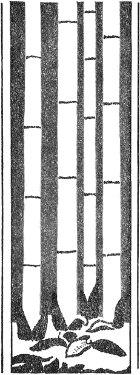
［＃改丁］
大正五年五月中浣、妻とともに葛飾は真間の手児奈廟堂の片ほとり、亀井坊といふに、仮の
うきわれを寂しがらせよ閑古鳥 芭蕉
（真間の閑居の記）
［＃改丁］朝ぼらけ
ほのぼのと
 遊
遊飛びあがり宙にためらふ雀の子羽たたきて見居りその揺るる枝を
飛びあがり宙に羽たたく雀の子声立てて
葛飾の真間の
住みつかぬ山の
堪へがてぬ
この夏や真間の継橋朝なさなゆきかへりきく
蕗の葉に亀井の水のあふるれば
おのづから心安まるすべもがと寂しき妻と野に出でて見ぬ
この妻は寂しけれども
草の葉に
山ゆくと妻をいたはりささがにのいぶせき糸も我は払ひつ
たまさかに
かろがろと雀飛びつき
うしろ向き雀
月の夜のましろき
燕とまるただち
一羽とまりまた一羽とまる
つぎつぎに
何の芽か物の芽かをす雨ゆゑに
枇杷の葉の
枇杷の葉の
かさこそと蟹匍ひのぼる竹の
雨しづく見のすずしさや庭の
驚きてつと角
［＃改ページ］
［＃ページの左右中央］
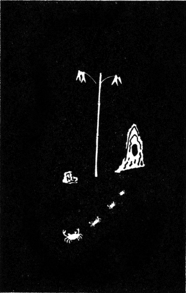
［＃改ページ］
葉蘭の闇に蛍か居らし息づきつつとある葉裏の青う
矢のごとく時たま
一天晴れて
朝鮮風俗の絵葉書を見て
白妙のころもゆたけき
［＃改ページ］
［＃ページの左右中央］
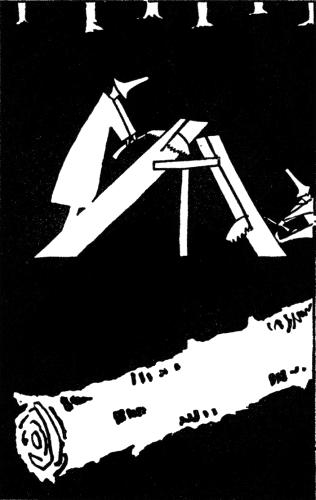
［＃改ページ］
この山はたださうさうと音すなり松に松の風椎に椎の風
松風の
かおかおと啼くは鴉。ぴよぴよと啼くは雛鶏 。雀子はちゆちゆとさへづり、子を思ふ焼野の雉子 けんけんと夜も高音うつ。現身 の鳥の啼く音 のなぞもかく物あはれなる。天 わたる秋の雁金春くれば遠き雲井にかりかりと消えて跡なし。
花なつめ軍帽
我が
いつしかに夏のあはれとなりにけり乾草小屋の桃色の月
夏浅み朝草刈りの
庭さきに雀の
葛飾のふくら雀の声きけばつくづく恋し父母の家
夏浅き月夜の野良の家いくつ
みそ萩の花咲く庭の夕月夜尻向けて
月の夜の
カンナの花黄なる
月夜よし厩のうらの枇杷の木に啼く
河土手に蛍の
月の夜の
蛍飛ぶ浅瀬の蛇籠濡れ濡れて薄けぶり立てり月夜明りに
孟宗
昼ながら幽かに光る蛍一つ孟宗の藪を出でて消えたり
羽根そよがせ雀
松山に松蝉鳴きて久しければ立ちとまる母か子の手を曳きて
太鼓一つとんとろと鳴れり炎天の
日の盛り細くするどき萱の
ややに
静かにはひそめぬものか草
子供らが息のこもごも青草にふかくこもらふ昼ふけにけり
澄みとほる葦間の日ざし明るければ啼くよしきりか一羽啼きてゐる
かくるれど我がつく息のおのづから
何の花にほふ
白の牛寝そべる
雪のごと湧きて
鞠のごと空にあつまり翅ばたく蝶いづち
空ゆくは
［＃改ページ］
［＃ページの左右中央］
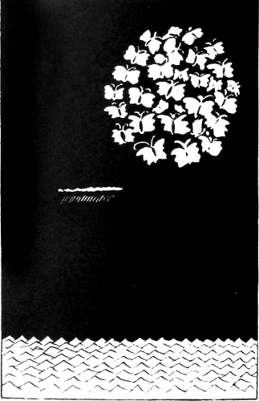
［＃改ページ］
すれすれに
［＃改ページ］
アッシジの聖 フランチェスコの物語。フランチェスコは雀子を愛 しみ給 ひき。雀子も慕ひまつりき。現身 の人にてませば、かの人も亦 人のごと寂しくましき。寂しくて貧しくましき。寂しく貧しくましますが故、遜 り、常に悲しくましましき。いといと悲しくましましき。それ故に末 遂に神を知らしき。その聖 道のべに立たしたまへば雀子は御後 べ慕ひ、御手 にのり、肩にとまりき。さてちゆんちゆんと鳴いたりき。あなあはれ、雀子よとて雀子を撫でさすり、掻い撫でさすり、偽りなせそ、むさぼりそよ、おのづからなれ、正しく、直 く常童 にて、天地 の神ごころにも通へとぞ、悲しかれよと宣 りましき。御法 説かしき。雀子を愛 しみたまへば雀子も慕ひまつりき。雀子にも解 きやすき御言葉なれば、雀子も御言葉ををろがみまつり、羽根をすり頭 さげてき。またちゆんちゆんと鳴いたりき。さて徒 に物を欲り、浮かれ、たばかり、盗まざりけり。偽らず、安らなりけり。かかる時草原に露満ちて、虫鳴きそそり、飾り無き野の花のかをりも吹く風の涼しきままに、空は円く澄みわたりて、また、塵ひとつだにとどめざりければ、聖の御頭 かすかに後光をはなち、差しのべたまへる両 つの御手の十の御指は皆輝きて、その掌 の雀子さへも光るばかりに喜び羽うち、御前 に輪を成す雀のむれもみなみな雀の後光をかすかに立てて啼き恍 れ遊ぶ。フランチェスコは御空を仰ぎて、主よ、主の奴僕 はかくありぬ、かく貧しきが故にこそ世のあらゆるもろもろの御宝をも却つて主のごとく、この身ひとつに保ちまつる。ありがたや、ハレルヤとぞ涙ながして讃 め祷 りませば、雀もともに、ハレルヤ、ハレルヤと眼を上げ涙ながして御空を仰ぐ。現身 の人の聖 と現身 の鳥の雀と、雀とフランチェスコと朝夕に常かくなりき。あなあはれ、よの常 の事にはあらずよ。温かき御心ゆゑぞ、大きなる博 き御心もてぞ、ありとある愛 しみたまへば、御心は神にもいたり、雀にも通ひましけむ。あなあはれ人のこの世の現 にもかかる聖 のましまししものか。
蓮の花を
日の
擂鉢に白き
この朝や妻と眺めて白玉の米の
赤茄子は麦藁帽を裏向けて受けてかかへつこぼれひかるまで
こどもがないてる、こどもが、こゑあげてないてる。どうしたどうした、こどもよ、わたしはあたまをさすつてやる。それでもないてる、こどもが、いつまでもないてる。どうしていいか、こどもよ、わたしもなみだがながれる。
泣きやまぬ
ながれ来て宙にとどまる
唐黍の
今日もまた郵便くばり疲れ来て唐黍の毛に手を触るらむか
そよかぜに子供が遊んでゐる
とりどりに木の
貧しさに堪へてさびしく
貧しさに堪へてさびしく
朝咲きて夕にはちる沙羅の木の花のさかりを見ればかなしも
愚庵
沙羅双樹の花の盛りに赤と青の
朝咲きて
百日紅の花のさかりとなりにけり眺めてを
百日紅の花も咲きたり時をりは遊びに来ませやや遠くとも
寂しさやいつか挿したる酒甕の
寂しさや妻が
ましら玉、しら玉あはれ、白玉の米、玉の米、米の玉あはれ。そを一粒、また二粒、三粒、四粒と数ふれば白玉あはれ。うすき瀬戸白の小皿に幾すくひすくへどあはれ、かそかそと声ばかりして、ころころと音ばかりして、掻き寄せて十粒に足らず、ひろへれど十粒を出でず、かそかそところころと、声するは音するは、空しき櫃の空櫃 の米櫃の底。ましら玉、しら玉あはれ、白玉の米、玉の米、米の玉あはれ。
反歌
米櫃に米のかすかに音するは白玉のごとはかなかりけり
ましら玉、しら玉あはれ、白玉の米、玉の米、米の玉あはれ。そを一粒、また二粒、三粒四粒と数ふれば白玉あはれ。掻きよせて十粒に足らず、ひろへれど十粒を出でず。今は早や我は饑ゑなむを、我妻もかつゑはてむを、ましら玉しら玉あはれ。さは云へど米のしら玉、貧しとてすべな白玉、その玉を雀子も欲れ、ひもじきは誰もひとつよ、雀子も来ては覗き、饑ゑて鳴き、鳴きては遊び、遊びては求食 り、求食 るを、米の玉あはれ。雀来よ、雀来よ来よ、いとせめて啄 めよこの米、ひもじくばふふめこの米、汝 らが饑ゑずしあらば、うまからば、うれしくかはゆく鳴くならば、白玉あはれ。わがどちはこの我は、わが妻とても、今さらに食 さずともよし、食 さずともよし。ましら玉しら玉あはれ、しら玉の米、玉の米、米の玉あはれ。
反歌
饑ゑ饑ゑて雀がふふむ米つぶはしら玉のごとかはかなかるらむ
ましら玉、しら玉あはれ、しら玉の米、玉の米、米の玉あはれ。絶ち絶ちて幾日をか経し、饑ゑ饑ゑて幾夜をか経し、この我や生きて貧しく、生きんすべせんすべだにもなきものを、米の玉、しら玉あはれ。はづかなるあるかなきかの金を得て、かきよせて、市のちまたに米買ふと破 れし嚢を手にさげて、これに米、すこし賜べよと乞ひのめば入れて賜びけり、さらさらと入れて賜びけり。うれしくて走り出づれば金賜べと人の驚く。忘れたり、ゆるされませと赤らみて、金置きてまた駈け出 れば、うしろより米はとおらぶ。驚きて、また忘れたり、ゆるされと、此度 はしかと、しら玉の米の嚢をひきかつぎかかへて戻る、米の玉、しら玉あはれ。現なるこれや現か、ゆめならず、現なりけり。その現、現なるこそうれしかりけれ、果敢なかりけれ。しら玉の、ましら玉の、ましら玉の、しら玉あはれ。しら玉の米、玉の米、米の玉あはれ。
反歌
米を買へば金は忘れて金を置けばまたも忘れつこれの米の玉
犬の子に白き飯皿 、子鴉に青き飯皿、朝夕に同じ飯盛り、おのがじじ食せよと呼 べば、犬の子は己 が飯惜しと、子鴉は己 が飯惜しと、犬の子は子鴉が飯、子鴉は犬の子が飯、ひたぶるに奪ひ取らむと、ひたぶるに盗み食 さむと、ただ啼きつ吼えつ噛みつす。己 が飯はすでにあまるを、己 が飯に足れりとはせで、なじかさは他 の物欲 る、なじかさはよその物欲る。同じことかはゆきものを、同じこと飯は盛れるを、犬の子よ子鴉よあはれ。
あなあはれ、みぎりひだりに、子鴉と犬の子と寄る。此方 向けば子鴉あはれ、其方 向けば犬の子あはれ。二方 の鳥よ獣 よ。ひとしけくかはゆきものを、同じけくかなしきものを、いづれ別 きいづれ隔てむ。かにかくに両手あげつつかろく叩き、撫でてあやせば、羽根はたき尻尾ふりきる。ひもじきかさらば食 めよと、一つ掌 に牛の乳 盛れば、子鴉はみぎりより来て、犬の子は左より来て、嘴 と口つつき合せて、啄 き嘗め、啄き嘗めつす。また、そねみ、惜み、にくまず。あなあはれ空飛ぶ鳥と、地 を匍ふ家の畜 といつのまにかくや馴れけむ。なじかさはかくも親しき。これやこの人の我が掌 に相睦 み和 むを見れば、今さらに喜ぶ見れば、この我やみぎりひだりに、とみかう見涙しながる。
ふと見つけて寂しかりけり月の夜の光に白き蝶の舞うてゐる
目に見えて門田の稲葉吹く風もとりわけて今朝は秋めきにけり
百日紅の花の盛りを秋蝉のいち
破障子ひたせる池も秋づけば目に見えて涼し稗草のかげ
おのづからうらさびしくぞなりにける稗草の穂のそよぐを見れば
青すすき
野分だつ薄の風に
早や秋、早稲の穂づらを飛ぶ
風そよぐ早稲の穂づらの夕あかり
空は晴れて蓮と早稲田の
空は晴れて水遥かなり蓮の花
足の泥
足の泥すすぎゐにけり蓮の花はすず風の早稲の穂にあづけつつ
鳰鳥の葛飾野良の蓮の雨笠かたぶけて来るは誰が子ぞ
はらはらと雀飛び
はらはらと雀
人ひとり三日の月夜に行き消えてそのかの
ぽつぽつと雀
久々に相見し父と湯をかかりて
大荒れのあとにしみじみ啼きいづるこほろぎのこゑのあはれさやけさ
父の背に
父の背に月の光は幅びろく隈なけれども皺ふかく見ゆ
父の肩眺め眺めてはたはたと叩けば
月読の光明るし
ふと時をり
うつつなく木賊にうつる
月今宵背戸の畑の秋蕎麦に夜露ふりこぼれ昼のごと明し
月の前になびきそよめく黒き穂の
月の前に鎌ふり立つる
月読の
風立ちて雁啼きわたる横雲の今宵の月夜はろかなるかも
せかせかと煙立てたり蘆間近く
新らしく障子張りつつ茶の花もやがて咲かなとふと思ひたり
日向吹く風のほとりの稗草はこまごまと弱し光りそよぎつつ
稗草にをりふし
ひとつひとつ目につく庭の草の穂の
百日紅の落葉に
松が枝に
山松の音のわたる日の暮は夕焼の
山松の姿さびしき日の暮は障子早く閉めてひとり飯食ふ
ひたむきに雀羽ばたく向ひ風いまや
むきむきに飛べばつれなし二羽三羽雀垂穂の野にひるがへる
日の暮の友なし雀心して飛べや田づらの風吹きかはる
華やかにさびしき秋や
風に見えてしきり羽ばたく稲穂雀遠き穂づらにちりまぎれつつ
ちりぢりに雀まぎるる
穂づらはなれ風に羽たたく前向き雀あなかはゆ白き頬がふたつ見えて
風に見えて雀羽ばたく穂波のすゑ今し
千羽雀
落葉多しすこし掃かめと掃きゐたり夕さり寒き
秋ふかむ夕日明りや
ぽつぽつと雀飛び
入り
かよわなる
椰子の実の
椰子の実の殻にからびし葉煙草の
今やまさに廻り澄まむとする独楽の声かなしもよ
独楽二つ触れてかなしも
独楽の精ほとほと尽きて
鳰鳥の葛飾早稲のにひしぼりくみつつあれば月かたぶきぬ
真淵
松風のしぐるる寺の
松が根に夕さり
松が根にときたま
こまごまとちらばり寒き
木々うつる寒き
夕されば裏の
目に見えて冬の
［＃改ページ］
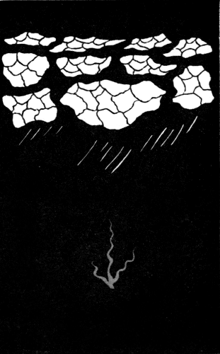
［＃改ページ］
いよよ寒く
風さむき
白妙の
鴉一羽霜田かすめてかおかおとこがらしの枝に今とまりたり
暗き空の
枝にゐて一羽はのぞく庭の霜雀つくづく鳴きふふみつつ
むきむきに雀啼き
雀が二羽ころげ羽ばたくうつつなさ落ちむとしてはまた飛びあがる
霜ふかき野川の堰 、あはれよと今朝 見に来れば、いつとなく水量 涸 れつつ、隙間なく氷張りけり。枯すすき、土堤 の枯草、凍りつき白くきびしく、両側 の立枯並木 いよいよに白くさびしく、雪空の薄墨色にこまごまと梢明 り、下空 の小枝 のほそ枝立ちつづき見れども飽かず、入り交り網目して透く。両側 の立枯並木下 見れば一側 並木、時をりにとまる鴉もその枝の霜にすぼまり、渡り鳥ちらばる鳥もその空に薄煙 立つ。風吹けばかすかに揺れ、雪ふればいよよしづもり、さむざむと時雨るる夜半も、月あかり落ちゆく暁 も、消 なんとし消 たずかすかに、現 にもうつしけなくも、ただ寂し薄し果敢なし。霜ふかき野川の堰 今朝もまた氷張りけり。その川の両側 つづき、隙間なく枯木つづけり。あはれあはれ立枯並木 。
すな真菰、真菰が中に菖蒲さく潮来 の入江、はるばると我が求 め来れば、そのかみの潮来の出嶋荒れ果てて今は冬なる。旅やどり、消ゆるばかりに一夜寝て寝ざめて見れば、霜しろし水 の辺 の柳、何一つ音もこそせね、薄墨の空の霧 らひにただ白く枝垂 れ深めり。枝垂れつつ水にとどけり。また白き葦にとどけり。そのかげの小さき苫舟、いよいよに霜の凍 りて、こまごまと霜の凍 りて、舟縁 も苫も真白く櫓も梶も絶えて真白し。つくづくと眺めてあれば、閑 かなる入江のさまや、苫舟にのぼる煙も風無 ければ直 ぐに一すぢほそぼそとしばしのぼれり。広重のその絵の煙、目に見れば浮世なりけり。あなあはれ水の辺の柳、あなあはれかかりの小舟、寂しとも寂しとも見れ。折からや苫をはね出て、舟縁の霜にそびえて、この朝の紅 き鶏冠 の雄の鶏 が、早やかうかうと啼き出 けるかも。
軒下に四五羽擦り寄り庭つ鳥の
雨しぶく腰高障子あかあかと早や
うろこ雲月に片照り置く霜の
河真菰薄かすめて下りる雁の
この道の茶の花垣の寒霜に雀声して
枯れ枯れの唐黍の
かさこそと
ひとつひとつ雀
刈小田に落穂掻き掻く雀いくつうしろ向けるは
ねんごろに
ふかぶかと揺れの近づく薄の穂いよよ輝き牛曳かれ出づ
曳かれ出でてうしろ振り向く
蒲の穂のさむざむ明る沢の
たまさかに
蒲の穂に葦の穂先はとどかねどとどかぬなりに揺れの寒けさ
蒲の穂にひとひら白き冬の蝶ふと舞ひあがる夕空の
わが宿は雀のたむろ冬
追はれ追はれ木へ逃げたかる田圃雀一としきり鳴けば夕かげり
一しきり鳴きて飛び去るむら雀枯れしほづえには赤き柿いくつ
百舌鳴けり柿のほづえにただ一羽雀つぐめり柳に四五羽
古池に寒うしだれし枯柳向うに小さく白き
古池に
一色に寂びれはてたる冬の庭夕さり
今さらに寂しと云ふもあはれなり荒れはてし庭をひとり眺むる
ただ一つお庭に白しすべすべと
古池のそばにすがれし
咳すれば寂しからしか軒端より雀さかさにさしのぞきをる
さびしきか雀廂の
古池に
むきむきに雀すぼまる枯木の枝夕さり寒し
ふと見たら
この冬は貧しかりけり庭つ鳥の餌をひろふかにひろふ
貧しきは堪へむ然れどこの風のこの寒さには今は堪へ得ぬ
たまたまに障子にあかる
折ふし障子ひびかす羽根の音雀ぞと
寂しさに堪へてあらめと云ひにけり堪へてありけりまづこの冬は
今さらに云ふ事は無し妻とゐて夕さりくれば
貧しけば豆なとまかめと
やらはれて逃げゆく鬼のうしろかげ鐘馗が睨むふりのをかしさ
暮近き日あし
枯芝に枯芝いろの蝶ひとつやすらふほどの日の光あはれ
枯芝に冬の日暮の蝶ひとつやすらひて久しふと離れたり
風に
路に出でていつかちらばる野良雀今朝も寒きかひとつひとつ動く
寒空を一羽風切る
寒むざむし背戸の水田のうす氷
松ばかり生ふる山かも風吹けばたださうさうと松風の音
松風の澄み吹くところ寺ありてねうはち鳴らすそのねうはちを
吹きとほる山松風の向ひ風
吹きとほる山松風の空近く吹き散らさるる
この夜 も雪はふりけり。かの夜 も雪はふりけり。その声や霊 も消 ぬかに、降り積り消ぬる白雪。白雪のふれば幽かに、たまゆらは澄みてありけど、白雪の消 ぬるたまゆら、仄かなるまたも消 にけり。白雪の果敢 な心地 の我身にも遣る方もなし。
竹あちこちちよろちよろ川に日の
竹あちこちちよろちよろ川に日の
山ゆけばお山で赤い落椿ひとつひろはな道のなぐさに
巣をつくる二羽の雀がうしろ羽根かすかにそよぐ春立つらむか
軒の端に雨のしづく白露のこぼるる見れば春は来にけり
雨ふくむ春の月夜の薄雲は
雨のこる
春浅み背戸の水田のみどり葉の根芹は馬に
春といへどまだ寒むからし
雨ほそき
垣越しによきしめりよと云ふ声のうれしくぞきこゆ田を鋤けるらし
思はぬに虹立つ空の
虹の輪の
虹の輪にひとしほ冴ゆる早苗田の水田の
ひさかたの
雨ふくむ野良の
［＃改ページ］
［＃ページの左右中央］
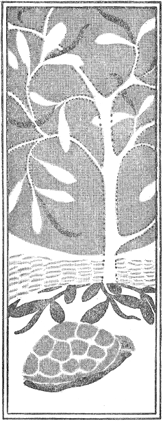
［＃改丁］
大正三年六月、我未だ絶海の離嶋小笠原にあり。妻は
［＃改丁］
［＃ページの左右中央］
［＃改ページ］
一
大わだつみの波にただよふ椰子の実のはてしも知らぬ旅もするかも
二
小笠原
珊瑚寄る嶋の
南海の離れ小嶋の
あるかなく生きて残れば
風
我やひとり離れ小嶋の椰子の木の月夜の葉ずれ夜もすがら聴く
嶋の子
嶋の子は嶋を広しと
海亀
日に照られ波にさらされ海亀の甲羅の苔も青
荒磯の洞
小笠原嶋
小笠原嶋ブラボが
三日月山三日の月よりなほほそく
和田の原なだれ逆巻く波間より煙あがれり船通ふらし
信天翁
日はひねもす
弟嶋を眺む
沖つ嶋
椰子の実
椰子の実の椰子の梢にからからと鳴りて明るきひと日なりけり
永き日の椰子と椰子との葉ずれより
玉蜀黍
しづけさや黍は黍とし照り
護謨の葉
肉厚く重き護謨の葉かがやき
昼深きかがやきのはてはつたりと護謨の厚葉が垂れ
帰心矢の如し
父嶋よ仰ぎ見すれば父恋し母嶋見れば母ぞ恋しき
ちちのみの父の嶋より見わたせば母の嶋見ゆ乳房山見ゆ
父嶋のそばに兄じま弟じま母のそばには嫁妹じま
帰らなむ父と母とのますところ妻と
松風と雀
青ヶ島一名鬼ヶ島ともいふ
波まくら
恐ろしき鬼ヶ島ちふ
さうさうと松風騒ぐ青ヶ島悲しとはきけどここも
世の中は常かなしもよ沖の島ここの
あな
鬼ヶ島沖の小島の
人にきけば鬼ヶ島ちふ鄙の島その
帰京
小笠原
小笠原の海の土産は何々ぞ珊瑚椰子の実大きごむの葉
ひさびさに仰ぎまつれば涙なりこの
［＃改丁］
［＃ページの左右中央］
［＃改ページ］
ひさかたの
大空を見ておどろかぬ
天つ日の光に馴れて
幼子を見よ彼等あそぶと蒼天の
常高く何か
わが
草の葉を見よ
思へ妻草の
我は貧し
金は無し
父母の裂けしころものほころびを縫ふ針すらも無きを
金なければ憎し
一
老いらくの父を思へばおのづから
ははそはの母に向へばおのづから涙はふり落ち来て答ふすべしなし
二
うち
三
四
ますらをや貧しきばかりにうつしみの
声あげて笑ふ
今さらに
今さらに別れするより苦しくも
今さらに別るると云ふに恋しさせまり死なば死ねよと
その時
うつし世の
わが妻が悲しと泣きし
ほとほとに戸を去りあへず泣きし
妻を帰して
貧しさに妻を帰して朝顔の垣根
苗や苗胡瓜の苗や茄子の苗苗はいつくし朝顔の苗
苦しさに
苦しさに声うちあぐるたはやすけどおとなしく堪へて
思ふままに声を放ちて
追憶
代々木の
浅編笠すこしかたむけ鳳仙花見入りてし子が細りうしろで
空はまろく海ははろけしここは妻よ
かの庵よまこと
別れては離れ小島の椰子の木のすべなき我や夜も
女色
たわやめの色に溺れてこの
大声に笑ひすませば足るものをとは云ふものの涙こぼるる
憐憫
この我や心いたらぬ
現世の身のあはれさぞ思ほゆる憎しとは思へ女なりけり
悲願
我を挙げて人をあはれと思ふ日のいつかは
蟹味噌
蟹を搗き
筑紫の
蟹の味噌強く噛みしめはしけやし夏は
蟹味噌の
この我や響するどき蟹味噌の蟹し噛まずば慰まずけり
［＃改ページ］
［＃ページの左右中央］
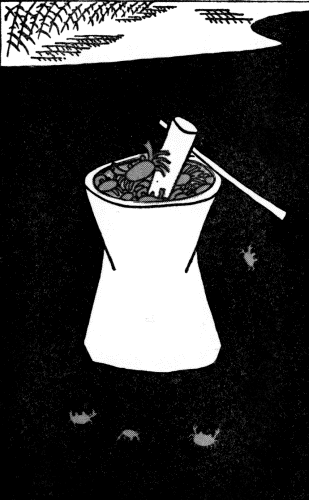
［＃改ページ］
［＃ページの左右中央］
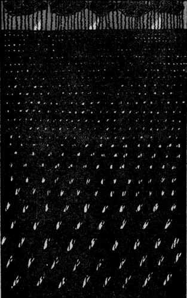
［＃改ページ］
兵児
九州者 な横道者 青竹割つて兵児 にかく
青竹割り
田打蟹をおもふ
黒崎潟潮干てゆけば田打蟹はろばろと湧くこゑの寂しさ
ろくろ
思ひ
見つつゐて寂しかりしかいつしかと我を忘れつろくろ
父母も妻も思はずろくろ
ろくろ見るろくろ廻るがただうれし
ろくろ見るろくろまたなし
子供の野球
球投ぐる振のよろしさ見るさへや心はをどる苦しき時も
十五夜
あかあかと十五夜の月
何ごとも夢のごとくに過ぎにけり万燈の上の桃色の月
今宵はも三五十五夜照る月の光もさやかわがひとり
朗らなる満月の夜に万燈とぼり心さぶしも我が軒通る
満月と鴉
眺むれば満月光に飛ぶ鴉一羽二羽三羽、五羽と飛ばなくに
鴉飛びて
ひさかたの満月光に飛ぶ鴉いよよ一羽となりてけるかも
［＃改丁］
［＃ページの左右中央］
［＃改ページ］
路次
あかあかと十五夜の月隈なければ
月の夜に水をかぶれば頭より
陰影
円かなる月の光のいはれなくふと
月の夜の白き
現身
幅広き月の光に在り馴れず我は心もいと細り
今宵また寝なむひとりかかにかくにわれは仏にあらぬものをよ
中秋
澄みに澄み澄みに澄みたる中空の月のまはりを飛ぶもののあり
かうかうと月は明りてわたれども人の身我は飛ばれざりけり
しろたへの
ただならぬ電光の赤き
火花ちらす電光の
夜をこめて空に幽かに揺るる凧の何かしら放つその火花はも
［＃改ページ］
［＃ページの左右中央］
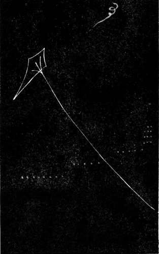
［＃改ページ］
発電機
真夏日の
ああ
ああ
鴉
澄みわたる光のなかにゐる鴉かあと一声啼きにけるかも
円
大きなるまんまろき円ひとつかきひとり眺めてありにけり昼
大きなる
変態
麗うらと大空晴れて人殺す鉄砲つくる音もきこゆる
そこ通る
雨ふれば
雨ふれば青き御空ぞなつかしきその青空も寂しと思へど
雨ふればおほよそごころねもごろに濡れてかをりぬ雫するまで
［＃改ページ］
［＃ページの左右中央］
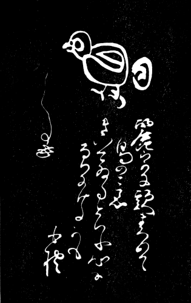
［＃改ページ］
麗日
鳥のこゑ
［＃改ページ］
［＃ページの左右中央］
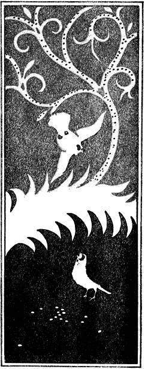
［＃改丁］
［＃ページの左右中央］
［＃改ページ］
雀のみ住みてささ啼く雀の巣卵
春は軒の雀が宿の巣藁にも
月読の光の
巣の中にいくつ卵をまもればか雀は寝ぬぞ春の月夜に
天つ日の光の強く射すところ卵はひとつのこされにけり
しら玉の雀の卵寂しければ人に知られで春過ぎむとす
しら玉の雀の卵ひとつわれてまこと雀の声立てむ
［＃改丁］
［＃ページの左右中央］
［＃改ページ］
寒水臻る
おのづから水のながれの寒竹の下ゆくときは声立つるなり
竹林に人あり
せうせうと降りくるものか村時雨寒竹林に人
雨過ぐ
ひと色に寒くにじめる冬の山雨過ぎぬらし竹のみな靡く
小閑
枯れ枯れの石に日のあたりおぼつかな寒竹の影がやや
時雨の後
そぼ濡れて竹に雀がとまりたり二羽になりたりまた一羽来て
いそがしく
寒雀
風さむき孟宗の
閻魔の咳
冬の光しんかんたるに真竹原閻魔大王の
口赤き閻羅が前の笹の藪しんかんとして雀のつるみ
［＃改ページ］
［＃ページの左右中央］
［＃改ページ］
雉子
澄みとほる
一
さびさびと時雨ふり
村時雨羽根をすぼめて寒竹の枝にかすかにゐる雀かも
村時雨羽根をひろげて寒竹の枝から飛ばんとし飛ぶ雀かも
雨しぶく今朝の笹葉の
二
深藪に
一
篠竹の竹の
篠竹の笹の小笹のさやさやにさやぐ霜夜の声の寒けさ
霜さむき孟宗原に燃ゆる火のほのぼのと赤し夜や明けぬらむ
しみじみとつめたき朝はとく起きてこちごちの
寒むざむと赤き日あがる田圃のすゑ工場いくつ見えて
野づかさの冬の
［＃改ページ］
［＃ページの左右中央］
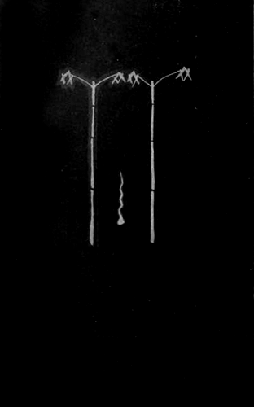
［＃改ページ］
二
深藪に来かかる我の足の音ふと高くなりて我と
深藪に一千万本竹ありて人間ひとり在ればさびしゑ
深藪の中に実赤き
三
三縁山増上寺の山門前にふる時雨日がな日ぐらしふりにけるかも
鳩よ鳩よ
鴉のこゑ
しげしげと時雨見送る
松が
時雨ふる坂の紅葉の
時雨ふる冬の
寒鴉
鴉一羽山の枯木にとまりたり向きを
霜の夜ごゑ
この夜ことに星きららかに麻布の台霜
この夜ひと夜眼の冴え冴えて
澄みとほる
霜こほる
なに削る冬の夜寒ぞ
厨辺の霜
路次の霜に桃色うすき鼠子の
今朝見れば置く霜濃くて
霜ふかき路次の
霜かぶる
［＃改丁］
［＃ページの左右中央］
［＃改ページ］
瓦斯の
雪の夜にたまたま遇へる白き牛の荒々し息の
しんしんと
小夜吹雪激しくは打て角を
吹雪やみて月夜
［＃改ページ］
［＃ページの左右中央］
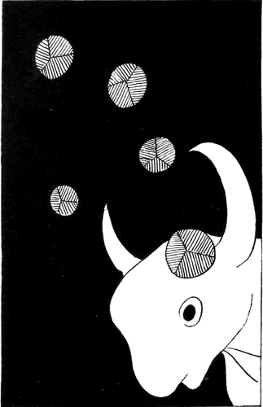
［＃改ページ］
かうかうと仏うつつに見えまして立たすけはひ近し真夜の大吹雪
吹雪かぜ向き変りたらし引きすぼめし夜の
夜の吹雪ややあかるらし思はぬに吾が
吹雪やみて夜のふけまさる路次の闇にふと立ちてきけば
朝
雪けぶり立てて幽かに飛ぶ雀笹の葉の
夜
こんこんと笹竹原につもる雪
笹藪から雪の田圃へぽつつりと
いまだ起きて火だね
この寒き雪の夜中にさらさらと澄みてひびくは何の葉つぱぞ
雪の夜に
右の足を左の足にのせにけりまだも
足の指
いまだ世に親鸞上人おはすとき石の枕に雪ふりにけむ
目のさめて待てば遅しも
ははそはの母のおもとの水しわざ澄みかとほらむこの
目のさめてややにふえゆく雀の声あなあはれ我も目はさめてゐる
人間のこゑ湧きおこるしののめどきすなはち走る新聞くばり
袖に来て白く飛びちる雪つぶてあなさびし子らが雪投げの玉
浅草の雪
金竜山
首
屋根の雪
硝子戸を強く拭きこむこの
雀飛ぶ屋根の
屋根の雪霞みて暗き
屋根をころげて
椎の葉の雪
椎の葉に
ほのかなる声なりしかど椎の葉に一夜積りし雪のうれしさ
椎の葉のかそけき雪に朝日子のかがよふ見れば春さりにけり
石臼と杵
石臼と杵とましろし路次の奥あなあはれ今朝は一面の雪
ふかぶかと雪
石臼のほとりに飛べや
石臼のふちに
寂しさに
寂しさに起きて雪掃くかそけさは人も知らじな路次の白雪
夙に起きて雪掃き寄すとまだ醒めぬ隣りの雪も片寄せにけり
霰と雀
あまりに
白玉か米の粒かと見つるらむ雀声立てて
いよよ
雀子は身ぬち
いそがしき雀の遊び必死なれあな
卵わりつつ
雪の日の笹竹がくり啼く
重き雪の力竹
この吾れに吾れののますとしら玉の卵をいつか割りてゐにけり
卵わりつつそぞろにたまる目のなみだ
朝の吸入
しののめの一本の竹雪しろし竹に雀が縋りつつ見ゆ
吸入器の
吸入器の湯気の
しみじみと厠掃除をする人が頬かぶりしろし雪つもりつつ
雪霙いよよ
かうがうし鶴はこの世のものならず幽かに啼けば生きたるらしも
清らけき鶴の思ひのともすればくづるるものか羽根一つはたく
春泥の上に
腰高に
鶴と云へどひもじきものか松が根の
一
高山の雪の
雪ふれば
二 題咏
足曳の山の
高山の雪に火縄の火の
雪空に澄みつつ白き山ふたつその
［＃改ページ］
［＃ページの左右中央］
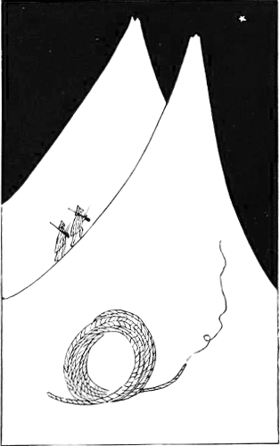
［＃改ページ］
三
寂しさに堪へて眺むる白雪のほのぼのとして
奥山の山の
白き尾の白き鶏あらはれて天上の雪に長鳴きにけり
［＃改丁］
［＃ページの左右中央］
［＃改ページ］
［＃ページの左右中央］
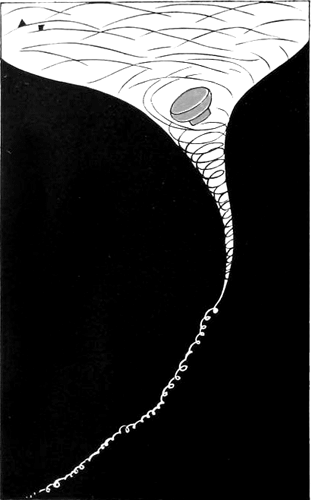
［＃改ページ］
茶の
茶の煙
茶の煙
茶の煙幽かなれかかし幽かなる煙なれども目に
碧山
碧山の竹に雀の軸一つ掛けてながむる人にもらひて
碧山の竹に雀の軸ひとつ掛けてながむる何も持たねば
碧山の竹に雀の絵を見れば竹に雀が遊べるらしも
碧山の竹に雀の
永日
刷毛うすく引きて小鳥をぽつぽつと
酒のまぬ人は
 から顔
から顔朝
寂しさに堪へてあらめと水かけて
鈴蘭
鈴蘭の寂しき花の絵の上にわが歌書けば人が売りけり
冷たき微笑
この思ひ
果敢なしといふもはかなし声立てて
目つむれば思ひかけずも火のごとき
沙羅の木
鴎外先生の庭
あはれなる石のひとつぞ古びたるその石の
さすたけの君が御庭の沙羅の花夕かたまけて見ればかなしも
童さび時に肩揺る大き人の笑ひ声さびし沙羅の花盛り
命二つ中に活けたるさくらかな 芭蕉
命二つ
寒薔薇
あはれなる人間の世の侘住居いちりんの花を床に活けてある
ありたけの金をはたきてくれなゐの花を一輪買うて来にけり
幾夜
あなかそか雪と霰のささやきをききて幾夜かわがひとり寝む
人のごとく
我ひとり人のこの世に有りふれて生くとふならぬ何か寂しき
いそのかみ古きむかしのうまびとも色を好みき我も然りか
人みなが
人みながわれをよろしと云ふ時はさすがにうれしゑ心をどりて
人みながわれをわろしと云ふ時はさすがさぶしゑ心ぼぞくて
財布
ある人より殊に軟らかきなめし革のを貰ひて
菅の根の永き春日に鳴く鳥の鶯色ぞわれの財布は
なつかしき人がたびたる革財布あはれなる金かきあつめ寝む
米の飯
おのもおのも
おもしろき事いふものか米の飯
人の世の味ひふるき米の飯飽かず
とり立ててうましともなけれ米の飯いよよ噛みしめていよよ知るべし
はだか鶫
火の上に鶇かざせばぢりぢりと
酒の粕に漬けて来し故この鶇酒の香がする焼きてくらひつ
頭よりかぢりかぢれば足が二つ遂にのこれりはだか小鶇
うき世
青空の山のかなたに人住みてあぐる煙の世にもかそけさ
山の媼の云はく
狼のこゑはいとはね住み
石版職工
日をこめて見れば涙もとどまらずあかあかと石に
人間の
生きの身のたづきなければ蓮の花
天竺の恒河の
あかあかと
石の上に白髪かきたれ描く
［＃改ページ］
［＃ページの左右中央］
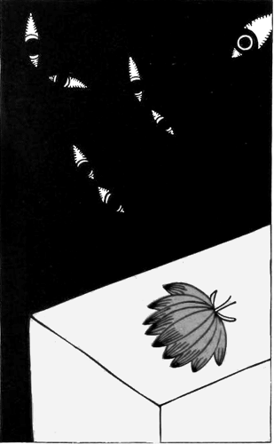
［＃改ページ］
馬なれば
仙台坂石の車曳きわびて馬倒れたり疲れけらしも
馬なれば
馬なれば
石かつぎ
石かつぎ石かつぎ走る何んぞこの貧しきどちが
石かつぎ石にひしがれ海つもの平目のごとくなりて死ににき
長屋者
路次の
ひたむきに箸を動かす長屋の子時をり
山がつが
老いぼれの山の
親ぞ子ぞたたくなかれとふるへゐつたたけたたけと人覗きゐつ
合掌
しみじみと今は乞ひ
［＃改丁］
［＃ページの左右中央］
［＃改ページ］
あなかそか父と母とは目のさめて何か
あなかそか父と母とは朝の雪ながめてぞおはす茶を湧かしつつ
あなしづか父と母とは
ちちのみの父のひとつの楽しみは夜に母刀自と
母刀自が父のみことの読ます
あなかそか父と母とのふたはしら早や
寂しき朝
さざめ雪窓にながめて
老いらく
老いらくの父に向へば
ははそはの母よと思へば涙しながるははそはの母も老いまししかも
父の白髪
ちちのみの父の眉毛も譬ふれば雪のごとくに古りましにけり
はづか残る父の
馬の毛を刈るバリカンに刈られけり父の
この父のうすき白髪のあはれさとわが母泣かすをとめ子のごと
皺ふかき父の
ちちのみの父の御咽喉をははそはの母のはらはら剃らすものかも
母の鏡
その子らの
老いぬれば
老いぬれば子の云ふなりにならしけり泣かしまつるなこの父母を
玉の緒の絶ゆる事無く
霜は置くとも
黒髪に霜は置くとも父母よまさきくおはせいつの世までも
ある日
このわれの箸が鉄雄の箸よりも大きかりけりこれのうれしさ
吾がこぼす白き飯粒ひとつひとつ取りて
葱のぬた
深く母の
母よ母よ早く
母の深き吐息きくとき最も深く母のこころにひたと
垂乳根の親とその子のあたたかく飯
垂乳根の深き溜息今もなほ耳にのこれり街をいそげども
ある時
しみじみと眼を見合わせて親と子が貧しかりけり飯をひろへる
父母とぽつりぽつりとひろふ飯の
父母の
たださへも
いはれなき父の
もの云へば涙ながれむこの父になに
いはれなき父の
父とこの父のこの子といかでいかで相離るちふ事のあらめやも
いつまでか貧しき我ぞ
父母の前をまかりてしみじみと見ほれゐにけり空は高きを
［＃改ページ］
［＃ページの左右中央］
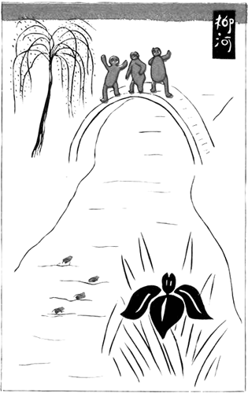
［＃改ページ］
麻布山浅く霞みて、春はまだ寂 し御寺 に母と我が詣でに来れば、日あたりに子供つどひて、凧をあげ独楽を廻せり。立ちとまり眺めてあれば思ほゆる我がかぶろ髪。ほほゑみて母を仰けば母もまたほほと笑ませり。けだしくや我がかぶろ髪母もまた忍ばすらむか。我が母は何も宣 らさね、子の我 も何もきこえね、かかる日のかかる春べにうつつなく遊ぶ子供を見てあれば涙しながる。
おなじく
垂乳根の母にかしづき麻布やま詣でに来れば
垂乳根の母とまゐりて麻布やまをろがみて居れば鳩の啼くこゑ
反歌
急に涙が流れ落ちたり母上に裾からそつと蒲団をたたかれ
ふつくらとした何とも云へぬかなしさよ蒲団の裾を母にたたかれて
御仏の御前の庭の山ざくら今日を盛りとにほひぬるかも
ひさびさに母にかしづきこの寺の花見に
限りなき春と思へや垂乳根と
春はいかにうれしかるらむ子供らが桜の下に鞠投げあそぶ
鞠もちて遊ぶ子供を鞠もたぬ子供見惚るる山ざくら花
母と子と花の木かげの廻り道廻りて永き
母と来て眺め見ほるる山ざくら春は今しか盛りなるらむ
わが家の人々、ある人にあざむかれて、我をはじめ皆々着のみ着のまゝとなりぬ。さて、ある知縁の人の死にあひたれど今さら包むべき香料もなし。弔問せんとするにも電車賃さへ無し。すなはち身につけたる衣を売り何がしかの金を得たり。妹家子また自らの衣を売りてその不足をたし、その残りの金にて、葛飾より汚穢車に載せて来れる白藤の花を一株求め、そを鉢に移して我が書斎にかざる。その時の歌。
白藤の花
わがころも金に
白藤の垂れて
借着
ははそはの母のころもは身にあはず父のころもを借りてあそべる
ははそはの母のころもは母の香ぞするちちのみの父のころもは父の香ぞする
ゆくりなく父のころもに手を差し入れ涙せぐり来ぬこの父の香よ
俚謡に曰く
蜻蛉つり
蜻蛉つり昼はさほどで無けれども日さへ暮るれば涙ながるる
蜻蛉つり蜻蛉のまろき目の玉のやうな涙をころげさせをる
［＃改ページ］
［＃ページの左右中央］
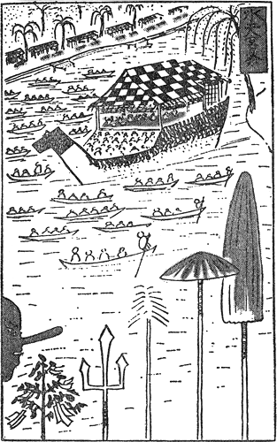
［＃改ページ］
柳河の玩具
ててつぷつぷ弥惣次けつけと啼く鳩のしろい
註 雉子ぐるまは筑後の清水山観世音にて売る。この古刹は行基菩薩の開基にかかる。京の清水山はこのわかれなり。この山の近きほとりに行基橋といふもあり。
［＃ページの左右中央］
［＃改ページ］
一
白木蓮の花のあたりの枯木立鴉とまりて日の永きかな
白木蓮の花の木の
薄ぐもの春のけはひの寂しくてきのふけふ白き街の木蓮
白木蓮の咲きの盛りに燕のこゑ
白木蓮の花のあなたに動く煙むらさきふかし
二
白木蓮の花の木かげのたまり水いつしか青き苔の生ひにけり
［＃改ページ］
［＃ページの左右中央］

［＃改ページ］
遠く見て
竹河岸に寒うひびらく音すなり竹立てかくる人ひとり見えて
寒々し夜明の星に目のさめて竹河岸に竹をゆさぶる人か
竹河岸に立てかけし竹の声寒し細かに見ればその
ひしひしと立てつらねたり真直の竹その
竹屋の空春は浅みか一羽の鳥さむざむと
こまごまと立てかくる竹白木蓮の上に突き抜け陽にかがやきぬ
竹屋の路次
蒼空見え早やも子どもの声すなり美くしき春の今朝の目ざめに
目はひらけど朱墨つきたる
病鶏
空円く光あかるし
火葬場道
春深し今日の
ちさの木に雀が三びき飛んで来てなかの一羽がころげけるかな
春永うしていたづらに吹く
道のべに
［＃改丁］
本集は「葛飾閑吟集」「輪廻三鈔」「雀の卵」三部の合巻歌集である。で、個々独立した歌集として見てほしい。総題を「雀の卵」としたのは、以前から深い因縁が全巻に満ちてゐるからである。
歌の数は左の通りである。
葛飾閑吟集
短歌 二百七十三首
長歌 十章
小詩 二曲
輪廻三鈔
短歌 百三十一首
雀の卵
短歌 二百八十三首
長歌 二章
右総計
短歌 六百八十七首
長歌 十二章
小詩 二曲
○短歌 二百七十三首
長歌 十章
小詩 二曲
輪廻三鈔
短歌 百三十一首
雀の卵
短歌 二百八十三首
長歌 二章
右総計
短歌 六百八十七首
長歌 十二章
小詩 二曲
この中で「葛飾閑吟集」の歌が最も新らしく、「輪廻三鈔」の歌が最も古い。ただ私の生活を知らうとする人は「輪廻三鈔」「雀の卵」と読んでそれから「葛飾閑吟集」に引き返して読んでほしい。
○
これらの歌は大正三年の夏から同六年の初夏までの私の生活から生れ出た。然しその製作の完成には十年の今夏まで約八ヶ年かかつてゐる。
尤も七年の春から九年の冬まで満三年の間は一時中止してゐた。
ここに一言して置き度い事は、私の歌は、殊に自然静観の歌は半年若くは一年二年、長くて三四年充分に頭の中でこなしてから、新らたにその表現の機会を俟つて言葉にするのである。それでどうしてもその当時の生活より遅れる。蚕が桑を食べて充分にそれらを自分のものとしてから徐にすずしい絹糸を生み出すやうなものである。即興はすくない。尤も抒情の歌には例外がある。
葛飾前歌の六首は葛飾へ移る前の年に、一二度市川へ遊んだ時に材を得た。その頃から葛飾と云へばなんとなく言葉の響からして好きであつた。それでおのづと其処へ住むやうにもなつた。
真間では真間閑居の記を書いたが、大正五年の五月から六月まで二た月しか居なかつた。そして三谷へ移つた。六年の初夏までゐた。
小詩の中「棗の花」は即興である。「子ども」もその当時の作である。
長歌の中で「鳥の啼くこゑ」「夜の雪」はその年の冬に作つたが、後の「アツシジの聖の歌」「米の白玉」「犬と鴉」「立枯並木の歌」「潮来の入江」なぞは此の六月の苦行で引続きできた。非常に気持よくすらすらとできた。一つも難渋しなかつた。歌は百首位新作である。前期のものも大概訂正した。
前期のものを代表する歌は「二百二十日」や「雀の宿」や田圃の晩秋の「向ひ風」「薄に雀」「蝸牛」「独楽」などである。
中期、動坂で作つたのが猫柳の「春雨」、「春の耕田」の二三四等である。この時から私の歌境は一転したやうに思ふ。
後期、今度の新作では夏の田園ものと冬枯の歌と両方面がある。夏の分は思ひきり明るくなつてゐる。中期から後期のものをよく見てほしいのである。
本集の歌で最も古いものは「雲母集」の新作や「白金の独楽」以前或は当時のものがある。三崎の歌で無いので後廻しにしたのである。
「流離鈔」の「玉蜀黍」「別離鈔」の「途上所見」「ろくろ」などは「真珠抄」に載せた。然し今度のはすつかり趣が違つてゐる。
その他「流離鈔」の「護謨の葉」「別離鈔」の「女色」「隼人」「夜禁のころ」「発心鈔」の全部がある。随分手を入れた。その頃は何も彼も麗かや時代であつた。「発心」の数首「機縁」の数首は然し忘れがたいものである。それから「白金の独楽」を生み出したのである。
「序」及「別離鈔」の大部分は七年動坂で書いた。
「子供の野球」はその後。全然根本から改作したので新作と云へば云はるゝものに「追憶」の二、三、四、五がある。
兎に角、本集の抒情歌は大概以前のを棄てずにどうにか生かした。どうしても棄てかねた情痴が残つてゐるのには驚いた。
本集は「輪廻三鈔」以後六年葛飾へ移るまでの東京麻布十番の時代のものである。
本集でも抒情歌は大概生かした。自然静観の歌はその代りに思ひきつて厳選した。「時雨と霜」「雪の翅ばたき」「白木蓮花」あたりを見ていただけばわかる。
この中で新らしいのが「麻布山」「童と母」の長歌。「寒暁」の雉子。これは動坂（七年）で作つた。葛飾での作が「白木蓮花」の諸章。「雉子の尾」の中のある数章「閻魔の咳」等。
他は概して麻布で作つてある。「石版職工」など古い方であるが、六年の一月から五月頃まで可なり作つた。そして「蛇窪村」の歌あたりから一転して、葛飾前歌あたりができ、「霜の夜声」だとか「山内の時雨」だとか「雀の宿」だとかの歌になつた。
四月に、二十日ばかり苦行して雀の卵の序歌以下一百首を作つた。然し、これも半数以上此集には削除して了つた、これがそもそもの「雀の卵」編纂の動機となつたものである。此集では各処に散らかつてゐるが、「茶の煙」の中の「鈴蘭」「沙羅の木」「冷たき微笑」「雪の翅ばたき」の中の「霰と雀」「石臼と杵」「現身」等である。
これらの歌は「潮音」「アララギ」等に主に載せて貰つた。葛飾でのは「三田文学」「文章世界」「新潮」等に寄稿した。
訂正集成するに当つて、多少新作が交つた。
「山内の時雨」の中の鵯やもみぢの歌「厨辺の霜」の中の油画のやうな三四首。「竹と山水」中の「小閑」「寒雀」「白牛」の二、三、四、等である。
本集も随分手を入れた。
挿画の十七葉は葛飾にゐた時描いた片端から版に廻はして印刷して了つたものである。その時はすぐにも歌集の方が出せさうだつたのであつた。
これらの画は印刷された儘永い事印刷屋の土蔵に蔵ひ込まれてあつた。
今見れば、歌と比較にならない。その頃はそれほど見劣りも為なかつたかも知れぬが、今日ではどうにもならない。非常に恥かしいから何度も止さうと思つたが、折角印刷してあるのだからと云ふので、弟の云ふのに任した。
この中で「白牛」だけは自分でも好きである。
本集を読まれる方は長篇散文詩「雀の生活」と散文抄「童心」とを是非参照してほしい。本集に歌はれた私の生活がはつきりわかるからである。前者は新潮社版、後者は春陽堂の版である。
以上